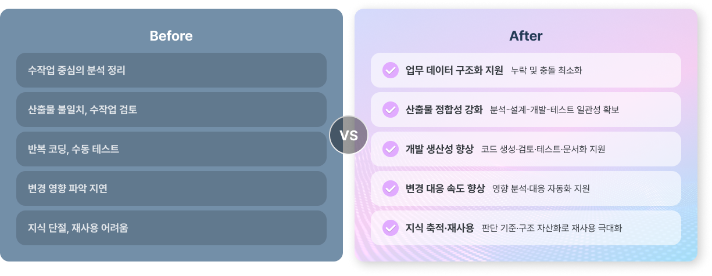
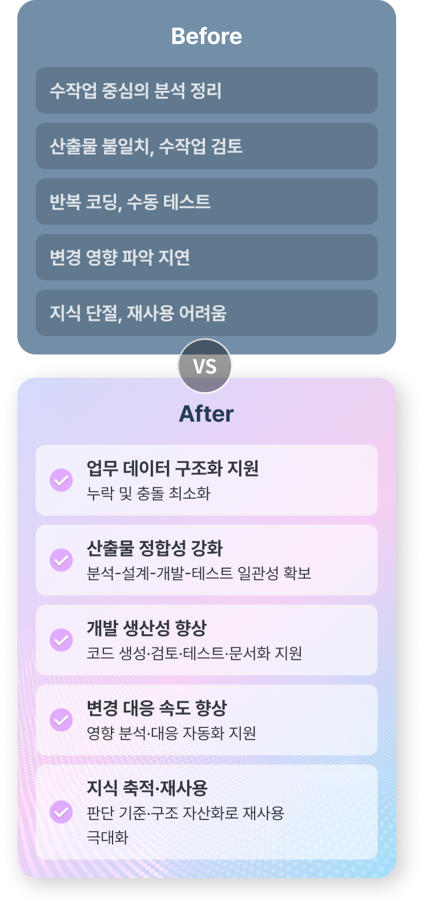

System Integration
분석·설계·아키텍처에 강한
AI시대 시스템 통합
IWI의 System Integration은 단순한 개발 수행이 아닙니다. 복잡한 업무와 시스템을 구조적으로 해석하고,
이를 분석·설계·아키텍처 중심으로 정리하여 운영 최적화된 시스템으로 완벽히 구축합니다.
OPENBRICKS의 구축 철학
프로젝트의 성패는 업무 구조화와 견고한 설계·아키텍처에 달려 있습니다. 속도와 방향을 함께 고려하는 구축 철학, IWI입니다.
기능 구현을 넘어, 업무 구조와 데이터 흐름을 설계
단순 화면 개발이 아닌 프로세스와 역할 구조 정의
대형 프로젝트, 대민서비스
특화 업무 시스템, 커머스 플랫폼 등
이해관계자 및 업무 흐름이
복잡한 시스템일수록
진가를 발휘하는 SI 구조 설계 역량
개발 속도만이 아닌, 정합성과 추적 가능한 구조 확보
구축 이후의, 운영 환경까지 고려한 체계 설계
OPENBRICKS의 구축 체계
프로젝트 전 과정을 체계적으로 연결하고, 단계별 목적과 책임을 명확히 정의합니다. IWI는 구축 전 과정을 통제 가능한 구조로 만드는 SI회사입니다.
분석
업무, 사용자, 데이터, 범위
구조화
설계
기능, 화면, 사용자 흐름,
인터페이스 구체화
아키텍처
시스템 구조, 연계, 데이터,
보안, 성능 기준 정의
개발
표준 기반 구현,
재사용성과 형상관리
검증
테스트, 품질 점검,
시나리오 검증
전환 및 운영안착
오픈 준비, 데이터 전환,
운영 인수인계, 초기 안정화,
지속적 지원
AI-Native
AI 내재화 기반 수행 방식
IWI는 AI를 단순한 기술적 트랜드나 부가 기능으로 정의하지 않습니다.
SI의 생산성, 정합성, 속도, 품질을 높이기 위한 내재화된 수행 체계로 친화적으로 활용합니다.


IWI는 AI내재화를 통한 자동화와 협업 환경을 통해
더 빠르고 안정적인 SI 수행 구조를 만듭니다.
표준 방법론과 품질 체계
복잡한 프로젝트일수록 시스템 구축은 개인 역량보다
표준화된 방법론과 품질 체계 위에서 운영되어야합니다.
OPENBRICKS는 현장에 맞지 않는 형식적 절차보다,
실무 중심의 방법론으로 품질과 생산성을 높입니다.
표준화된 산출 체계
역할과 책임 기반 수행 구조
단계별 검토와 품질 게이트
변경관리와 형상관리
인터페이스와 데이터 흐름의 정합성 확보
테스트와 운영전환까지 이어지는 추적성 확보
고객이 꼭 필요로 하는 SI역량
고객은 단순히 "개발 잘하는 회사"를 찾는 것이 아닙니다. 특히 중요한 프로젝트일수록 역량을 가진 SI 파트너를 필요로 합니다.
OPENBRICKS Expertise
OPENBRICKS가 잘하는 SI
오픈브릭스는 공공·금융·민간에서 연계가 복잡하고 운영이 중요한 시스템을 운영 가능한 구조로 구축합니다.
단순 개발 수행이 아니라 연계 구조·데이터 흐름·운영 통제를 앞단에서 설계해 납기와 품질 편차를 줄입니다.
공공·금융·민간 복합 시스템 연계
대내외 연계, 다기관 연동 등 복잡한 연계 경험 보유
연계 구조 설계 및 전문 데이터 송수신
API Gateway 포함 연계 구조 설계 및 안정적 데이터 전송
마이데이터/외부기관 연계 등 규격 기반 연동 경험
마이데이터 등 규격 기반 외부기관 연동의 높은 안정성 구현
실시간·비동기 흐름이 섞이는 운영형 서비스 구조 구현
안정적인 트랜잭션과 실시간 처리 구조
제공
컨테이너 기반 개발·배포로 변경 대응력 확보
표준화된 환경으로 빠른 배포와 변경 대응력 확보
오픈 이후 운영 안정화·전환·인수인계까지 연결
안정적인 운영 전환과 지속 가능한 서비스 운영 지원
운영 이력/검증(i-WMS, i-TMS)과 AI 내재화
이력 기반 관리와 자동화·지능화로 더 높은 품질과 생산성 확보
대표 적용 시나리오
대외기관/마이데이터 연계가 많은
공공·금융 시스템
규격·보안·데이터 흐름을 기준으로 연계를 구조화
다기관/다채널 연동을 안정적으로 운영 가능한 형태로 구현
채널과 백엔드가 복잡하게 연결된
서비스
연계/흐름/장애 영향 범위를 줄이는 구조로 설계
안정·확장 가능 구조를 고려한 운영 기반 확보
오픈 이후 운영이슈가 반복되는
시스템의 안정화·고도화
이력 기반 운영(i-WMS)과 통합 테스트·검수(i-TMS) 체계로 정리
개선 투자 판단까지 지원
결과물과 기대 효과
OPENBRICKS의 System Integration은 단순히 "구축 완료"로 끝나지 않습니다.
고객이 실제로 활용하고 운영할 수 있는 구조와 결과를 남기는 것을 목표로 합니다.
OPENBRICKS의 시스템 구축은 복잡한 구축 과제를 구조적으로 정리하고,
운영 가능한 수준까지 완성하는 서비스입니다.
업무에 맞는 시스템 구조와 흐름 정리
분석·설계·아키텍처 단계의 완성도 향상
표주화된 인터페이스와 데이터 체계 확보
산출물과 개발 결과의 정합성 강화
변경과 확장에 유연한 구조 확보
개발·검증·전환 전 과정의 생산성 향상
운영 가능한 서비스 환경과 전환 기반 마련
왜 OPENBRICKS일까요?
OPENBRICKS는 SI를 단순 인력 투입형 개발이 아닌, 분석·설계·아키텍처를 기반으로 AI와 표준 도구를 내재화해 실제 구축 품질을 높이는 방식으로 접근합니다.
분석·설계·아키텍처 주도형 SI 접근
AI 시대 IT조직 직무 기반의 수행 체계
단계별 프로세스와 산출물, 품질 기준을 갖춘 구축 방식
Copilot, Figma, IntelliJ 등 전문 솔루션을 연계한 지능형 협업 기반 프로젝트 수행
운영 현실까지 고려한 실무형 SI 역량
OPENBRICKS는 복잡한 시스템을 구조적으로 설계·구현하고 운영 가능한 수준까지 완성하는 전문 SI 파트너입니다.
Beyond Systems,
We Connect Business
오픈브릭스는 AX 기반 시스템 통합으로
시스템을 넘어, 비즈니스를 연결합니다.